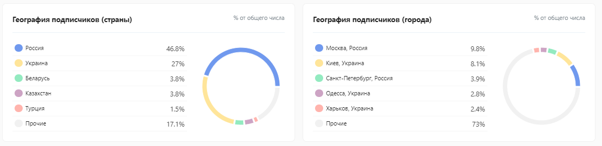
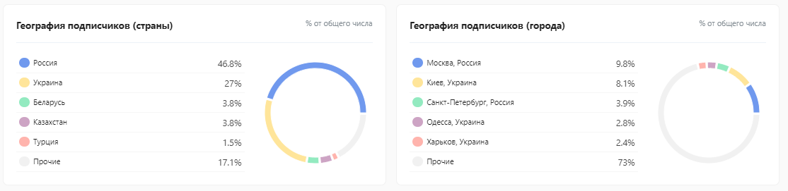
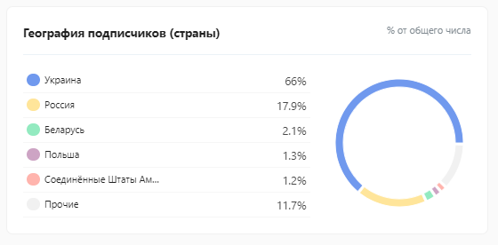
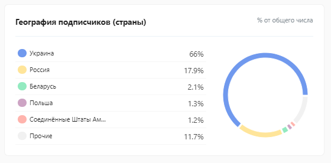

Теперь, когда мы все проводим много времени дома, многие из нас, вероятно, мечтают о доступном побеге. Возможно, в каком-нибудь тихом месте, где можно пообщаться с природой и уйти от повседневных забот, проводимых в помещении, кажется более важным, чем когда-либо, найти способ вернуться к природе и восстановить связь с собой и землей. Прямо сейчас звучит мечтательно, не так ли? Панорамный фасад стирает границу интерьера и живой среды вокруг. Пространство над головой раздвигает границы сознания.
Что привлекает:
Лучше моего мнения, могут быть только цифры и статистика, здесь собраны лучшие варианты из доступных только на этой площадке блогеры по тематике: мода.
Ничего лишнего, только конкретная статистика.
Количество подписчиков, ядро аудитории (Украина), география подписчиков, соотношение мужчин/женщин, показатель лайка постов
LQI — это оценка качества аккаунта, которая формируется из нескольких показателей: накрутка лайков/подписчиков, массфолловинг и прочее.
 

 
